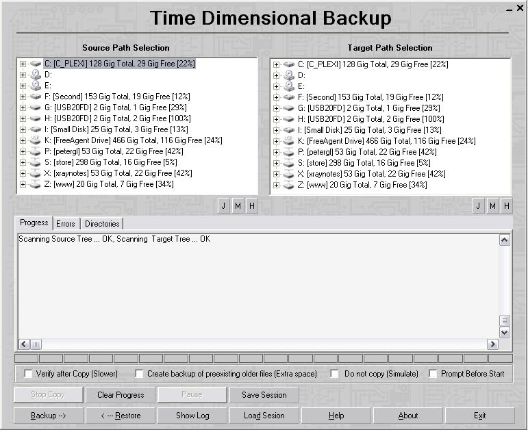

TimeDim has a relatively simple
system requirements. It will run on any 32 bit windows machine, and has
been extensively tested on Windows XP, Windows 2000, Windows 2003
Server, and Windows Vista.

Upon downloading and
installing, you must agree to the license terms
and warranty disclaimers detailed in the Setup License Screen. TimeDim
and its developers cannot accept responsibility for lost data, failed
operation, and consequential damages, even if TimeDim was advised of
the possibilities of damages. TimeDim Software developers cannot assume
responsibility for losses
arising out of its usage. Please see the program's accompanying
license agreement for further details.
The historical command line
version (dcp32.exe) is available here.

T.O.C.
<< Prev Page | Next Page >>
|
 Download
TimeDim
Copy Machine
Download
TimeDim
Copy Machine